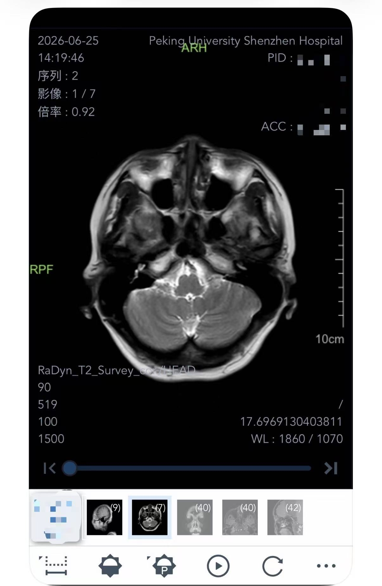
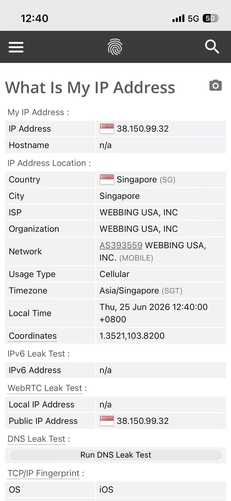

The Slow Medicine Problem
Living in Melbourne for more than twenty years, I got used to the rhythm of what I'd call slow medicine. You feel a bit off. You book a GP appointment for next week. They refer you out. Then you wait. It's quiet, private, and usually subsidised. But it is slow in a way that's easy to forget is a choice — until something forces the comparison.
A sudden eye issue while travelling did that for me. It pushed me into China's public hospital system without much warning, and what I found there completely changed how I think about managing health across borders.
If you've ever stared at a 12-month waiting list just to get a routine MRI, this is worth reading.
The Two-Minute Factory
Let's be honest about what China's medical system is: an industrial assembly line. I needed an orbital scan. I didn't want to wait months in Melbourne, so I booked a slot at a public hospital in Shenzhen. The consultation cost roughly 33 RMB — under seven Australian dollars. The doctor I saw was efficient and direct about his scope: orbital work wasn't his specialty, but he could order the scan I described. He was, in effect, a human interface for the system's test-ordering function. Not unkind — just precisely scoped.
The eye exam itself took two minutes. The atmosphere was chaotic in the way that high-volume public health always is. Nobody holds your hand.
But here is where it gets genuinely interesting: the technology and turnaround are world-class.
An enhanced orbital MRI — with contrast dye — cost roughly 695 RMB. That is about 150 Australian dollars. In Australia, the equivalent out-of-pocket cost is several hundred dollars and several weeks of waiting. Through the public system, you're looking at closer to a year. I walked into the imaging department at 1:50 PM. By that evening, a high-resolution digital report was on my phone.

Why the Scans Work Back Home
When I opened the digital folder containing my MRI films and cross-sections, something stood out. Every anatomical label on the imaging file was in English. Medical imaging language is universal. Whether the machine is in Shanghai, New York, or Melbourne, a radiologist reads the same visual data. The equipment is the same equipment.
This creates a straightforward arbitrage. Go to China, use their high-speed, cost-efficient system to get MRIs, CT scans, or extensive blood panels done within 48 hours. Pack those digital files. Fly home. Hand them to your local specialist. You bypass the months of waiting just to reach a diagnosis — and arrive at your follow-up appointment already informed.
The machine is the same. What changes is the queue, the cost, and the calendar.
China does have real limitations in other areas — importing certain Western medications, for instance, is genuinely complicated, and this isn't a post about treatment. But for pure diagnostics, the output is internationally readable and the speed is in a different category entirely.
The Invisible Wall
So why isn't every expat doing this? Because without local infrastructure, the system is genuinely hostile to outsiders.
China's hospitals are fully digitalised. Registration, appointment booking, result retrieval — all of it runs through apps and mini-programs that require a local phone number, an active WeChat account, and the ability to navigate interfaces that were not designed with foreign users in mind. I watched an elderly couple at the clinic that day looking completely lost because they couldn't get past the QR code registration step.
There is, I think, a real business opportunity sitting in that gap: a bilingual escort service for medical tourists. Someone who meets you at the border, handles digital registration, navigates the hospital flow, ensures safety protocols are followed — metal screening before MRI, allergy checks before contrast — and hands you your results in a format your doctor back home can use. For older expats or anyone unfamiliar with the system, it would be genuinely valuable.
Two Things to Sort Before You Go
If you want to try this route, there are two practical problems to solve before you arrive.
The first is hospital selection. Not all hospitals handle foreign patients with the same ease. My recommendation, based on this experience, is to look at the University of Hong Kong — Shenzhen Hospital. It operates on a more Western-oriented triage model and routinely issues official English-language reports, which makes the handover to your doctor at home considerably smoother.
The second is connectivity — and this one matters more than it sounds.
Standard roaming and local Wi-Fi inside mainland China will block access to almost everything you rely on: Google Maps for navigation between hospital buildings, WhatsApp to coordinate with family, and the Western-facing sites you use to research what you're looking at. At the same time, you still need to access the hospital's own apps, which run locally.
The solution I used was an eSIM that routes through a Singapore IP. It keeps your Western apps functional, bypasses the firewall, and still lets you connect to local hospital systems. I sourced mine from RoamMelb, a Hong Kong-run Airalo reseller. It's cheap, activates on arrival, and you discard it when you leave.

The eSIM I used roams through a Singapore exit node, which means your IP appears offshore from the perspective of China's firewall. Western apps work normally. Local apps work normally. You carry one device and one SIM.
Available at shop.roammelb.com — Asia and China Mainland plans in stock. Use code [AXIS40OFF] for a discount on your first three orders, expires 31st Dec 2026.
The Actual Takeaway
China's healthcare system was not built for bedside manner or privacy. The consultation is short, the environment is chaotic, and the administrative system assumes you are local.
But if you approach it as a high-speed diagnostic engine, it is genuinely powerful — and for anyone sitting on a long waiting list back home, that reframe is worth something.
The imaging quality is the same. The cost is a fraction. The turnaround is 48 hours instead of 12 months. If something needs investigating and the queue at home is not moving, taking control of your own diagnostic timeline is a reasonable decision.
You don't have to wait for the system to notice you. Go get the data. Bring it back. Then get treated.
The results travel. The queue does not.
The views expressed are solely those of the author in a personal capacity and reflect one individual's experience navigating the mainland China public hospital system. This does not constitute medical, financial, or legal advice. Medical decisions should be made in consultation with qualified healthcare professionals. Hospital systems, costs, and procedures are subject to change.